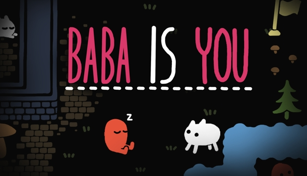

Baba is You is a puzzle video game created by Finnish independent developer Arvi Teikari (known professionally as Hempuli). The game centers around the manipulation of "rules"—represented in the play area by movable tiles with words written on them—in order to allow the player character, usually the titular Baba, to reach a specified goal. Originating as a short demo built for the 2017 Nordic Game Jam, the game was expanded and released on 13 March 2019 for PC and Nintendo Switch. Mobile versions were released in June 2021.
